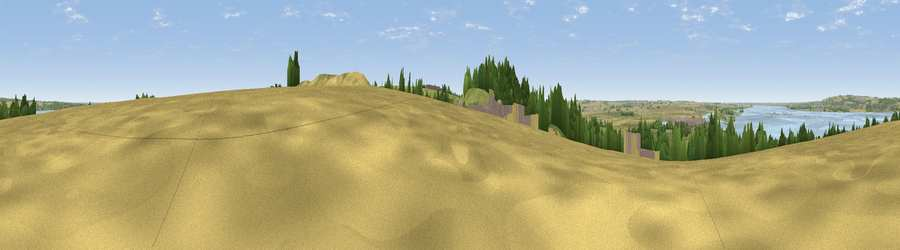

Viewpoint near South Ferriby
#20993 in England · top 34% of its area beats it · near South FerribyWhere it is
The exact computed spot (SE 99125 20725). Click the marker for map links.
The view, rendered

A 360° render of this exact spot computed from the terrain model, tree cover and land cover — summer colours, afternoon light, calibrated against photographs of famous viewpoints. Real trees, hedges and buildings will differ in detail.
The panorama
Grey silhouette: terrain skyline in each direction (720 bearings, Earth curvature and refraction included). Dashed green: skyline with trees (+15 m) and buildings (+8 m) as obstacles. Blue strip: how far the ground is visible on each bearing.
Where the view opens
Wedge length = distance to the farthest visible ground on that bearing (vegetation-aware). Rings at 10, 25 and 50 km.
What fills the view
43% cropland · 25% water · 20% grassland · 7% woodland · 4% built-up · 1% wetland
Angular shares of the visible panorama (visual magnitude), not map area. Landscape diversity 0.61 (0–1 Shannon).
Key numbers
More beautiful places nearby
The staircase of upgrades: each row has a higher view potential than everything closer. Driving times are estimates from straight-line distance, calibrated against real road routing — check an actual route before setting out.
| Place | Direction | Drive | Score |
|---|---|---|---|
| Viewpoint near South Ferriby | SE · 0 km | ~1 min | 57.4 |
| Viewpoint near Willerby | NNE · 11 km | ~20 min | 57.9 |
| Viewpoint near Alkborough | W · 12 km | ~22 min | 59.9 |
| Viewpoint near Burton Stather | W · 12 km | ~22 min | 60.6 |
| Viewpoint near South Cave | NNW · 13 km | ~24 min | 60.9 |
| Viewpoint near South Newbald | NNW · 15 km | ~26 min | 62.3 |
| Viewpoint near South Newbald | NNW · 15 km | ~27 min | 64.9 |
| Viewpoint near Claxby | SSE · 27 km | ~43 min | 70.5 |
53.67361, -0.50097 · source: screening · position refined by local search. Computed location — check access rights before visiting.